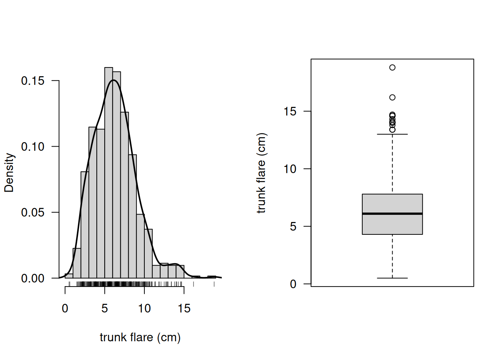
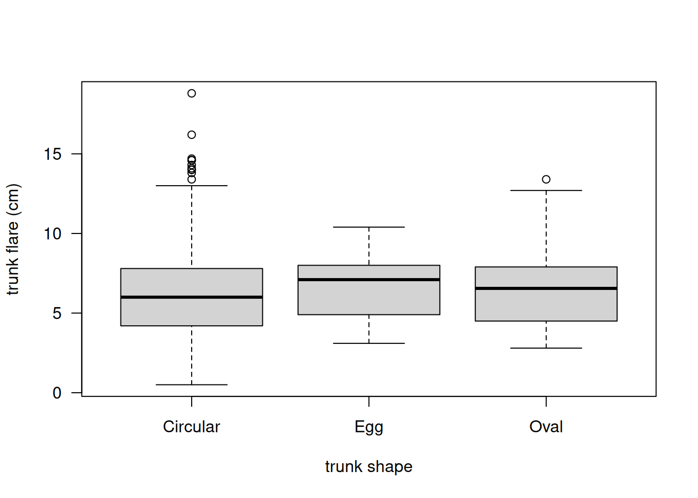
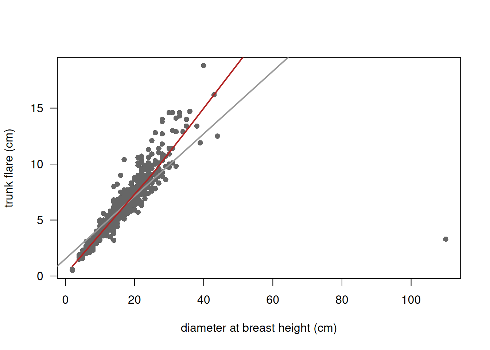
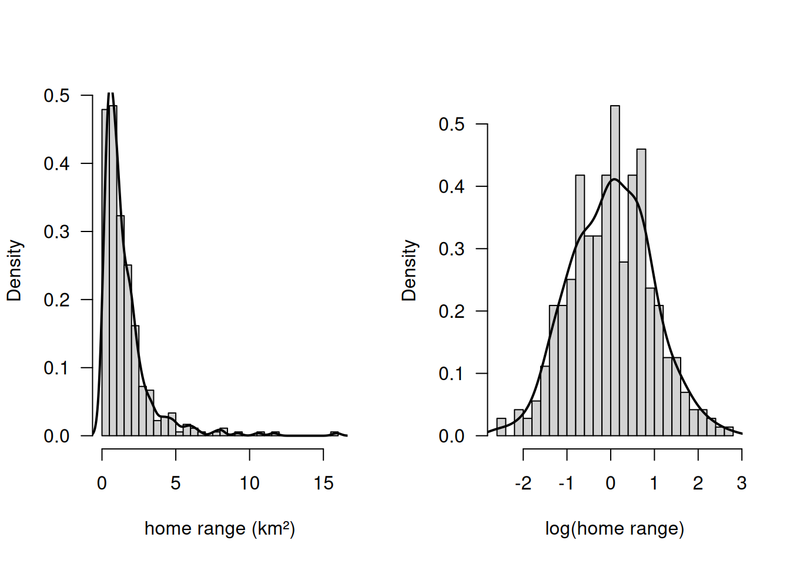
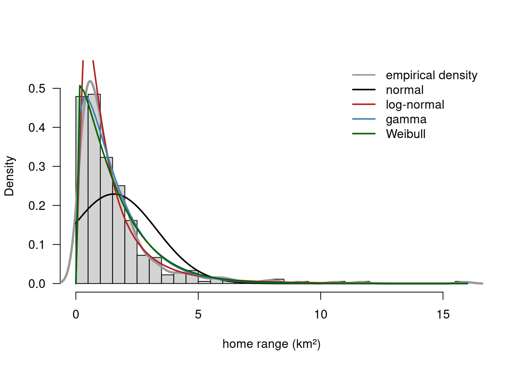
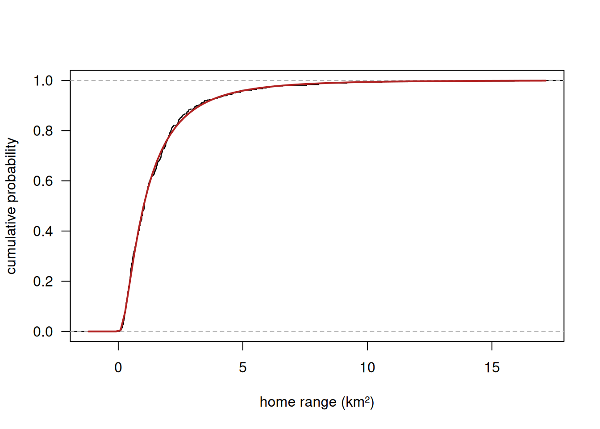
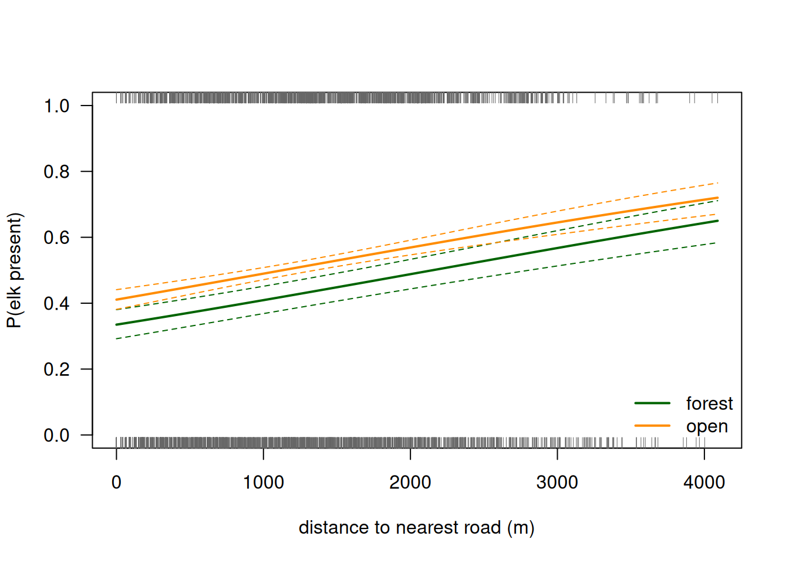
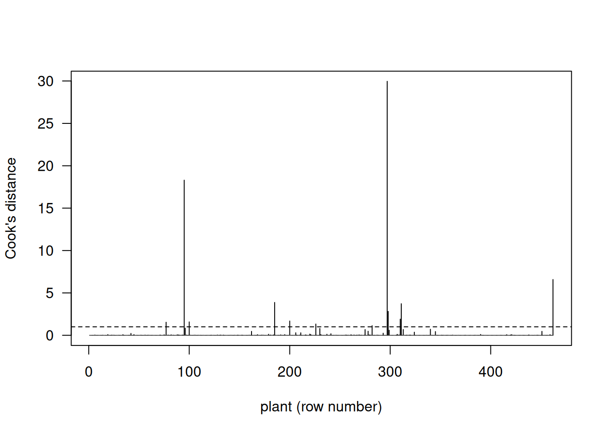
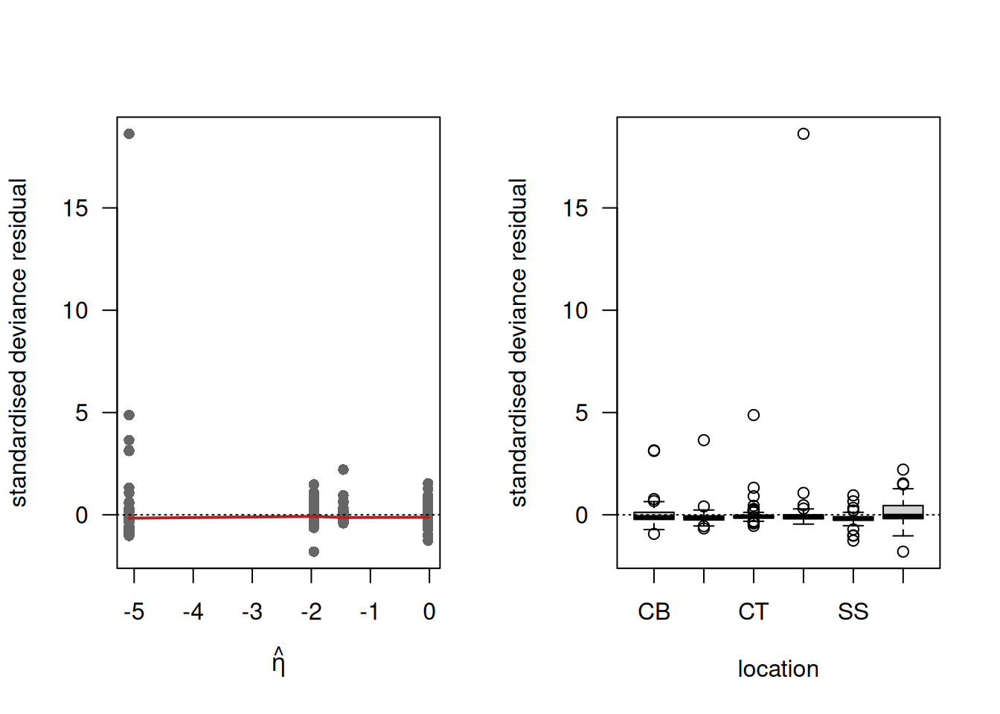
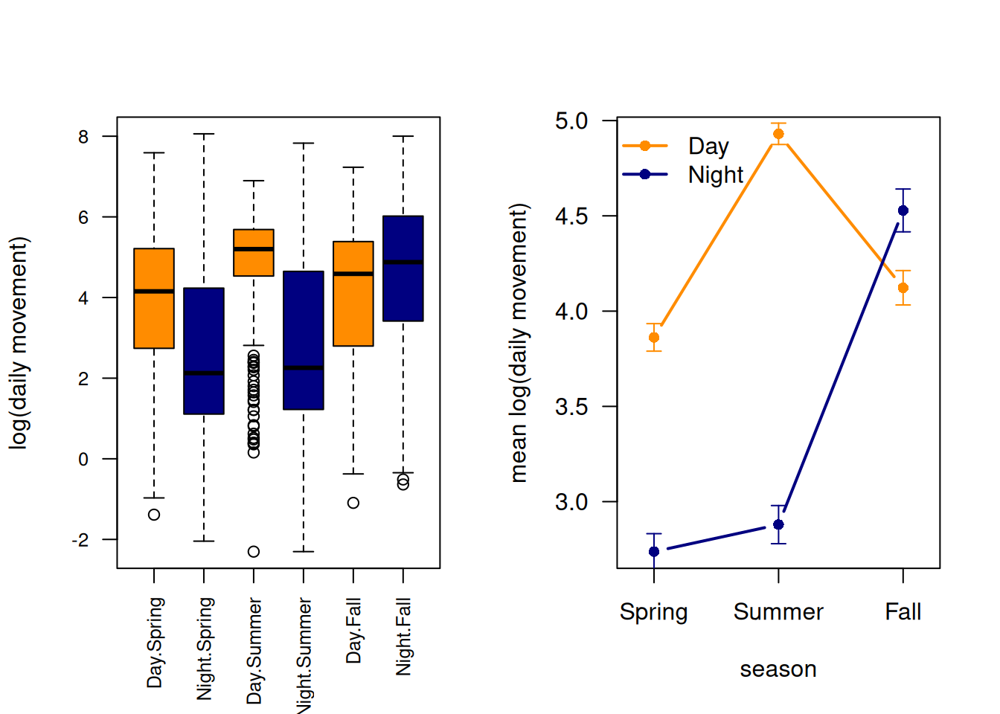

Code
library(qsbsdata)
library(MASS)Model answers to the six mixed exercises. The code is folded away (click “Code” to see it).
library(qsbsdata)
library(MASS)TF the mean, the median, the standard deviation, the interquartile range and the skewness statistic. Do the same for DBH. Which of the two variables is the more skewed, and in which direction?TF per trunk_shape with n, mean and sd per shape. Is it sensible to compare the three groups?(a)
skewness <- function(x) mean((x - mean(x))^3) / sd(x)^3
describe <- function(x) c(n = length(x), mean = mean(x), median = median(x),
sd = sd(x), IQR = IQR(x), skewness = skewness(x))
round(rbind(TF = describe(trunkfl$TF), DBH = describe(trunkfl$DBH)), 3) n mean median sd IQR skewness
TF 619 6.271 6.1 2.697 3.5 0.745
DBH 619 16.960 17.0 7.786 9.0 3.038Trunk flare: mean 6.27 cm, median 6.10 cm, sd 2.70 cm, IQR 3.5 cm, skewness 0.75. Diameter: mean 16.96 cm, median 17 cm, sd 7.79 cm, skewness 3.04. Both are right-skewed (mean above median, positive skewness), but DBH far more so: a skewness of 3.0 against 0.75. The trunk flare is only mildly asymmetric; the diameters have a long tail of a few very thick trees.
(b)
par(mfrow = c(1, 2))
hist(trunkfl$TF, probability = TRUE, breaks = 25, las = 1,
main = "", xlab = "trunk flare (cm)")
lines(density(trunkfl$TF), lwd = 2)
rug(trunkfl$TF)
boxplot(trunkfl$TF, las = 1, ylab = "trunk flare (cm)")
par(mfrow = c(1, 1))
boxplot.stats(trunkfl$TF)$stats[1] 0.5 4.3 6.1 7.8 13.0out <- boxplot.stats(trunkfl$TF)$out
c(n_outliers = length(out), min = min(out), max = max(out))n_outliers min max
14.0 13.4 18.8 Five-number summary of the boxplot: lower whisker 0.5, lower hinge 4.3, median 6.1, upper hinge 7.8, upper whisker 13.0 cm. There are 14 outliers, all on the high side, between 13.4 and 18.8 cm. The histogram shows a single mode around 5–6 cm with a tail to the right; the density curve confirms a unimodal, mildly right-skewed distribution.
(c)
boxplot(TF ~ trunk_shape, data = trunkfl, las = 1,
xlab = "trunk shape", ylab = "trunk flare (cm)")
round(t(sapply(split(trunkfl$TF, trunkfl$trunk_shape),
function(x) c(n = length(x), mean = mean(x), sd = sd(x)))), 2) n mean sd
Circular 555 6.22 2.73
Egg 10 6.79 2.35
Oval 54 6.67 2.40Circular: 555 trees, mean 6.22 cm (sd 2.73); Egg: 10 trees, mean 6.79 (sd 2.35); Oval: 54 trees, mean 6.67 (sd 2.40). The three means differ by less than half a standard deviation, so there is no striking difference. More important is the design: the groups are extremely unbalanced (555 against 54 against 10). With only ten “Egg” trees, the box of that group is based on almost nothing — its quartiles jump if a single tree changes — and any comparison involving it has very little power. Comparing Circular with Oval is reasonable; statements about Egg trees should be avoided or made with an explicit caveat.
(d) Trunk flare is a unimodal, mildly right-skewed variable with a median of 6.1 cm and a middle half between 4.3 and 7.8 cm. The mean (6.27 cm) is barely above the median, so with a skewness of only 0.75 both are acceptable summaries; I would report the median with the IQR, because 14 trees with an exceptionally wide flare (up to 18.8 cm) pull the mean and inflate the standard deviation, and the median/IQR describe the typical street tree without being affected by them. The outliers are real, plausible measurements of large old trees and should not be removed. The trunk shape explains very little of the variation in flare.
TF against DBH, with the Pearson, Spearman and Kendall correlation.trunk_shape and SidewalkDamage, with conditional proportions per shape.Egg trees, and the conclusion.(a)
plot(TF ~ DBH, data = trunkfl, pch = 16, col = "grey40", las = 1,
xlab = "diameter at breast height (cm)", ylab = "trunk flare (cm)")
abline(lm(TF ~ DBH, data = trunkfl), col = "grey60", lwd = 2)
lines(lowess(trunkfl$DBH, trunkfl$TF), col = "firebrick", lwd = 2)
c(pearson = cor(trunkfl$DBH, trunkfl$TF),
spearman = cor(trunkfl$DBH, trunkfl$TF, method = "spearman"),
kendall = cor(trunkfl$DBH, trunkfl$TF, method = "kendall")) pearson spearman kendall
0.8065441 0.9476953 0.8371797 Pearson \(r = 0.81\), Spearman \(\rho = 0.95\), Kendall \(\tau = 0.84\).
(b) Pearson measures how close the points are to a straight line; Spearman and Kendall only require the relationship to be monotone. A Spearman coefficient of 0.95 with a Pearson of 0.81 therefore says: the order of the trees is almost perfectly preserved (a thicker tree nearly always has a wider flare), but the relationship is not straight. The lowess smoother shows it: trunk flare rises steeply for thin trees and flattens off for thick ones, so the straight line lies above the data in the middle and below it at both ends. In addition both variables are right-skewed, and the handful of very thick trees sit far out on the x-axis where they have great leverage on the Pearson coefficient.
c(pearson_loglog = cor(log(trunkfl$DBH), log(trunkfl$TF)))pearson_loglog
0.9418963 On the log-log scale the Pearson correlation rises to 0.94, close to the Spearman value: the relationship is approximately a power law, i.e. straight after logging both variables. That confirms the diagnosis. In a report one would either use Spearman or model log(TF) against log(DBH).
(c)
frtab <- table(trunkfl$trunk_shape, trunkfl$SidewalkDamage)
frtab
0 1
Circular 383 172
Egg 9 1
Oval 45 9round(prop.table(frtab, margin = 1), 3)
0 1
Circular 0.690 0.310
Egg 0.900 0.100
Oval 0.833 0.167Circular trunks damage the sidewalk most often: 31.0 % of them, against 16.7 % of the Oval and 10.0 % of the Egg-shaped trunks.
(d)
chsq <- chisq.test(frtab)
chsq
Pearson's Chi-squared test
data: frtab
X-squared = 6.7079, df = 2, p-value = 0.03495round(chsq$expected, 1)
0 1
Circular 391.8 163.2
Egg 7.1 2.9
Oval 38.1 15.9\(\chi^2 = 6.71\) on 2 df, \(p = 0.035\). R warns that “Chi-squared approximation may be incorrect”. The expected counts show why: for the Egg trees only 7.1 and 2.9 cases are expected, and the usual rule of thumb is that all expected counts should be at least 5 (some authors allow a few above 1 as long as 80 % are above 5). With ten Egg trees the \(\chi^2\) statistic does not follow a \(\chi^2\) distribution closely, so the p-value of 0.035 — just below the conventional 0.05 — is not trustworthy.
(e)
chisq.test(frtab[c("Circular", "Oval"), ])
Pearson's Chi-squared test with Yates' continuity correction
data: frtab[c("Circular", "Oval"), ]
X-squared = 4.1728, df = 1, p-value = 0.04108fisher.test(frtab)$p.value[1] 0.0333463Dropping the Egg trees leaves a \(2 \times 2\) table with all expected counts above 5. The test then gives \(\chi^2 = 4.17\) on 1 df, \(p = 0.041\) — the same order of magnitude, so the conclusion does not hinge on the Egg trees. Fisher’s exact test on the full table, which does not rely on the \(\chi^2\) approximation, gives \(p = 0.043\) and confirms this.
Conclusion to report: “Trees with a circular trunk damaged the sidewalk more often (31 %) than trees with an oval (17 %) or egg-shaped (10 %) trunk (\(\chi^2 = 6.7\), df = 2, \(p = 0.035\)). Because only ten egg-shaped trees were present, the \(\chi^2\) approximation is unreliable for the full table; a test restricted to circular and oval trunks (\(p = 0.041\)) and Fisher’s exact test (\(p = 0.043\)) gave the same result. Note that this is an association, not a demonstrated cause: trunk shape may covary with species, age or planting site.”
hr and log(hr), skewness of both, suggested distribution family.(a)
hr <- HRData$HRsize / 1000
par(mfrow = c(1, 2))
hist(hr, probability = TRUE, breaks = 30, las = 1, main = "", xlab = "home range (km²)")
lines(density(hr), lwd = 2)
hist(log(hr), probability = TRUE, breaks = 30, las = 1, main = "", xlab = "log(home range)")
lines(density(log(hr)), lwd = 2)
par(mfrow = c(1, 1))
skewness <- function(x) mean((x - mean(x))^3) / sd(x)^3
c(skew_hr = skewness(hr), skew_log_hr = skewness(log(hr))) skew_hr skew_log_hr
3.56064400 0.03489163 On the original scale the distribution is strongly right-skewed (skewness 3.56): a peak below 1 km² and a tail out to 16 km². After taking logs it is almost perfectly symmetric and bell-shaped (skewness 0.03). That is the signature of a log-normal distribution; a gamma or Weibull distribution (also positive and right-skewed) are the other candidates.
(b)
fits <- list(normal = fitdistr(hr, "normal"),
lognormal = fitdistr(hr, "lognormal"),
gamma = fitdistr(hr, "gamma"),
weibull = fitdistr(hr, "weibull"))
round(t(sapply(fits, function(f) c(logLik = logLik(f), AIC = AIC(f), BIC = BIC(f)))), 1) logLik AIC BIC
normal -708.2 1420.4 1428.2
lognormal -483.6 971.3 979.1
gamma -507.7 1019.4 1027.1
weibull -513.4 1030.8 1038.5lapply(fits, function(f) round(f$estimate, 3))$normal
mean sd
1.548 1.740
$lognormal
meanlog sdlog
0.016 0.916
$gamma
shape rate
1.329 0.858
$weibull
shape scale
1.091 1.609 | distribution | log-likelihood | AIC | BIC |
|---|---|---|---|
| normal | −708.2 | 1420.4 | 1428.2 |
| log-normal | −483.6 | 971.3 | 979.1 |
| gamma | −507.7 | 1019.4 | 1027.1 |
| Weibull | −513.4 | 1030.8 | 1038.5 |
The log-normal distribution wins by a wide margin: 48 AIC units better than the gamma and 449 better than the normal. All four fits use two parameters, so the log-likelihood, AIC and BIC give exactly the same ranking (they differ only by a constant penalty). The fitted parameters are meanlog = 0.016 and sdlog = 0.916.
(c)
hist(hr, probability = TRUE, breaks = 30, las = 1, main = "",
xlab = "home range (km²)", ylim = c(0, 0.55))
lines(density(hr), lwd = 3, col = "grey60")
curve(dnorm(x, fits$normal$estimate[1], fits$normal$estimate[2]), add = TRUE, lwd = 2, col = "black")
curve(dlnorm(x, fits$lognormal$estimate[1], fits$lognormal$estimate[2]), add = TRUE, lwd = 2, col = "firebrick")
curve(dgamma(x, fits$gamma$estimate[1], fits$gamma$estimate[2]), add = TRUE, lwd = 2, col = "steelblue")
curve(dweibull(x, fits$weibull$estimate[1], fits$weibull$estimate[2]), add = TRUE, lwd = 2, col = "darkgreen")
legend("topright", bty = "n", lwd = 2,
col = c("grey60", "black", "firebrick", "steelblue", "darkgreen"),
legend = c("empirical density", "normal", "log-normal", "gamma", "Weibull"))
The normal distribution is hopeless: it is symmetric, puts its maximum near the mean of 1.55 km² instead of near 0.6, and assigns substantial probability to negative home ranges. The gamma and the Weibull have the right general shape but both rise too slowly near zero and are too low at the peak: their mode is far too flat, and they cannot reproduce both the sharp peak below 1 km² and the long tail. The log-normal follows the empirical density closely over the whole range.
(d)
ml <- fits$lognormal$estimate
plot(ecdf(hr), verticals = TRUE, pch = "", las = 1, main = "",
xlab = "home range (km²)", ylab = "cumulative probability")
curve(plnorm(x, ml[1], ml[2]), add = TRUE, col = "firebrick", lwd = 2)
ks <- rbind(
normal = unlist(ks.test(hr, "pnorm", fits$normal$estimate[1], fits$normal$estimate[2])[c("statistic", "p.value")]),
lognormal = unlist(ks.test(hr, "plnorm", ml[1], ml[2])[c("statistic", "p.value")]),
gamma = unlist(ks.test(hr, "pgamma", fits$gamma$estimate[1], fits$gamma$estimate[2])[c("statistic", "p.value")]),
weibull = unlist(ks.test(hr, "pweibull", fits$weibull$estimate[1], fits$weibull$estimate[2])[c("statistic", "p.value")]))
round(ks, 4) statistic.D p.value
normal 0.1996 0.0000
lognormal 0.0280 0.9418
gamma 0.0760 0.0315
weibull 0.0728 0.0444The fitted log-normal cdf runs through the ECDF almost everywhere. The KS tests agree with the AIC ranking: log-normal \(D = 0.028\), \(p = 0.94\) (no evidence of any discrepancy), gamma \(D = 0.077\), \(p = 0.03\) and Weibull \(D = 0.074\), \(p = 0.04\) (both rejected at the 5 % level), normal \(D = 0.22\), \(p < 10^{-15}\). Note that the KS test is conservative here because the parameters were estimated from the same data, so the p-values are if anything too large — which makes the rejection of the gamma and the Weibull all the more convincing.
(e)
c(p_above_2 = plnorm(2, ml[1], ml[2], lower.tail = FALSE),
observed = mean(hr > 2),
median_fit = qlnorm(0.5, ml[1], ml[2]),
median_obs = median(hr),
q90_fit = qlnorm(0.90, ml[1], ml[2]),
q90_obs = unname(quantile(hr, 0.90))) p_above_2 observed median_fit median_obs q90_fit q90_obs
0.2298749 0.2311978 1.0160808 1.0519058 3.2867907 3.1523010 The fitted log-normal gives \(P(\mathrm{hr} > 2\ \mathrm{km}^2) = 0.230\) against an observed proportion of 0.231; a median of 1.016 km² against an observed 1.052; and a 90 % quantile of 3.29 km² against an observed 3.15. All three agree closely — the fitted distribution reproduces the centre as well as the upper tail of the data.
(f)
c(lognormal_mean = exp(ml[1] + ml[2]^2 / 2),
observed_mean = mean(hr),
lognormal_median = exp(ml[1]),
observed_median = median(hr)) lognormal_mean.meanlog observed_mean lognormal_median.meanlog
1.545770 1.548324 1.016081
observed_median
1.051906 The fitted mean is \(e^{0.016 + 0.916^2/2} = 1.546\) km² (observed 1.548) and the fitted median \(e^{0.016} = 1.016\) km² (observed 1.052). The mean is 50 % larger than the median because the distribution is right-skewed: exponentiating a symmetric distribution on the log scale stretches the upper half much more than the lower half, so a minority of very large home ranges pulls the mean away from the typical value. exp(meanlog) is the median, never the mean — a classic pitfall when back-transforming from a log scale.
predict().anova() and AIC.(a) A 0/1 response is a single Bernoulli trial, i.e. a binomial variable with size = 1. The canonical link is the logit, which maps the probability from \([0,1]\) onto the whole real line so that the linear predictor can take any value:
\[\mathrm{presence} \sim \mathrm{Bern}(p), \qquad \mathrm{logit}(p) = \ln\frac{p}{1-p} = a + b \cdot \mathrm{dist\_roads} + c \cdot [\mathrm{habitat} = \mathrm{open}].\]
(b)
fe <- glm(presence ~ dist_roads + habitat, family = binomial, data = elk_data)
round(summary(fe)$coefficients, 6) Estimate Std. Error z value Pr(>|z|)
(Intercept) -0.686275 0.099293 -6.911638 0.000000
dist_roads 0.000319 0.000040 8.021506 0.000000
habitatopen 0.325652 0.092302 3.528100 0.000419Intercept \(-0.686 \pm 0.099\), dist_roads \(0.000319 \pm 0.000040\), habitatopen \(0.326 \pm 0.092\); all three are highly significant. These numbers are on the link (logit) scale: they are changes in the log-odds of elk presence, not in the probability.
(c)
c(p_forest_at_road = plogis(coef(fe)[1]),
OR_per_1000m = exp(1000 * coef(fe)["dist_roads"]),
OR_open_vs_forest = exp(coef(fe)["habitatopen"])) p_forest_at_road.(Intercept) OR_per_1000m.dist_roads
0.3348622 1.3760798
OR_open_vs_forest.habitatopen
1.3849330 \(\mathrm{plogis}(-0.686) = 0.33\): at the road itself, in forest, the fitted probability of elk presence is 33 %. Per 1000 m away from the nearest road the odds of presence are multiplied by \(e^{1000 \times 0.000319} = 1.38\), i.e. +38 % per kilometre. At a given distance the odds in open habitat are \(e^{0.326} = 1.38\) times those in forest — coincidentally the same factor, so being in open habitat is worth about one kilometre from the road.
(d)
eta <- coef(fe)[1] + coef(fe)["dist_roads"] * c(0, 1000, 3000)
by_hand <- exp(eta) / (1 + exp(eta))
by_predict <- predict(fe, newdata = data.frame(dist_roads = c(0, 1000, 3000), habitat = "forest"),
type = "response")
round(rbind(by_hand, by_predict), 4) 1 2 3
by_hand 0.3349 0.4093 0.5674
by_predict 0.3349 0.4093 0.56740.335, 0.409 and 0.567 at 0, 1000 and 3000 m in forest. Note that the same 1000 m step changes the probability by 7.4 points between 0 and 1000 m but by 8 points between 2000 and 3000 m: the effect on the probability scale depends on where you are on the curve, whereas the effect on the odds scale is constant.
(e)
dnew <- seq(0, max(elk_data$dist_roads), length = 200)
cols <- c(forest = "darkgreen", open = "darkorange")
plot(NA, xlim = range(dnew), ylim = c(0, 1), las = 1,
xlab = "distance to nearest road (m)", ylab = "P(elk present)")
for (hb in c("forest", "open")) {
pr <- predict(fe, newdata = data.frame(dist_roads = dnew, habitat = hb), se.fit = TRUE) # link scale
matlines(dnew, plogis(cbind(pr$fit, pr$fit - 2 * pr$se.fit, pr$fit + 2 * pr$se.fit)),
lty = c(1, 2, 2), lwd = c(2, 1, 1), col = cols[hb])
}
rug(elk_data$dist_roads[elk_data$presence == 1], side = 3, col = "grey40")
rug(elk_data$dist_roads[elk_data$presence == 0], side = 1, col = "grey40")
legend("bottomright", bty = "n", lwd = 2, col = cols, legend = names(cols))
The bands are narrow in the middle of the data (a few hundred to about 2500 m, where most observations are) and widen beyond 3000 m, where few locations were sampled. The two rugs show the mechanism directly: presences are on average farther from roads (1391 m) than absences (1174 m).
(f)
fe2 <- glm(presence ~ dist_roads * habitat, family = binomial, data = elk_data)
anova(fe, fe2, test = "Chisq")Analysis of Deviance Table
Model 1: presence ~ dist_roads + habitat
Model 2: presence ~ dist_roads * habitat
Resid. Df Resid. Dev Df Deviance Pr(>Chi)
1 3845 5255.5
2 3844 5252.6 1 2.9503 0.08586 .
---
Signif. codes: 0 '***' 0.001 '**' 0.01 '*' 0.05 '.' 0.1 ' ' 1AIC(fe, fe2) df AIC
fe 3 5261.537
fe2 4 5260.586round(summary(fe2)$coefficients, 6) Estimate Std. Error z value Pr(>|z|)
(Intercept) -0.498568 0.146505 -3.403092 0.000666
dist_roads 0.000172 0.000094 1.825534 0.067921
habitatopen 0.097631 0.160782 0.607224 0.543702
dist_roads:habitatopen 0.000179 0.000104 1.722556 0.084969The interaction reduces the deviance by 2.95 on 1 df, \(p = 0.086\) — not significant at the 5 % level — while the AIC drops marginally, from 5261.5 to 5260.6 (0.95 units). The two criteria point in slightly different directions, which is typical for a term that improves the fit by about 3 units of deviance: AIC keeps anything that gains more than 2, the likelihood-ratio test asks for about 3.84. A difference of 1 AIC unit is not substantial (the rule of thumb is 2), and the interaction coefficient is not significant, so I would report the additive model: the effect of distance to roads is estimated to be somewhat stronger in open habitat, but with 3848 observations the data still cannot establish that difference, and the simpler model is easier to interpret.
SpeciesSV.Location; extend the model.(a)
ph <- plantherb[plantherb$Dissected > 0, ]
fp <- glm(cbind(Damaged, Dissected - Damaged) ~ Species, family = binomial, data = ph)
round(summary(fp)$coefficients, 4) Estimate Std. Error z value Pr(>|z|)
(Intercept) -1.9572 0.0297 -65.8291 0
SpeciesSL 1.9337 0.0468 41.2828 0
SpeciesSP -3.1284 0.0563 -55.5564 0
SpeciesSV 0.4993 0.0645 7.7472 0fitted_props <- plogis(c(SI = coef(fp)[1], coef(fp)[1] + coef(fp)[-1]))
names(fitted_props) <- levels(factor(ph$Species))
round(rbind(fitted_by_model = fitted_props,
mean_of_per_plant_proportions = tapply(ph$Damaged / ph$Dissected, ph$Species, mean),
pooled = tapply(ph$Damaged, ph$Species, sum) / tapply(ph$Dissected, ph$Species, sum)), 4) SI SL SP SV
fitted_by_model 0.1238 0.4941 0.0061 0.1888
mean_of_per_plant_proportions 0.1304 0.3606 0.0230 0.0472
pooled 0.1238 0.4941 0.0061 0.1888plogis(-1.957) = 0.124: in the reference species SI, 12.4 % of the dissected flower heads were damaged. The fitted proportions are 0.124 (SI), 0.494 (SL), 0.006 (SP) and 0.189 (SV).
They differ from the average of the per-plant proportions (0.130, 0.361, 0.023, 0.047) because a binomial GLM weights each plant by the number of heads dissected: the model estimates the pooled proportion (total damaged / total dissected per species), which the third row of the table reproduces exactly. A plant with 9856 dissected heads counts thousands of times more heavily than a plant with one head, whereas the mean of the per-plant proportions gives every plant the same weight. For SV the difference is dramatic (0.189 vs 0.047): a few large, heavily damaged plants dominate the pooled proportion. Which of the two is the quantity of interest is a biological question — “what fraction of heads is damaged” (pooled) is not the same as “what fraction of its heads does a typical plant lose” (per-plant average).
(b)
c(deviance_ratio = deviance(fp) / df.residual(fp),
pearson_ratio = sum(residuals(fp, type = "pearson")^2) / df.residual(fp))deviance_ratio pearson_ratio
15.06763 67.23799 Deviance / df = 15.1 and Pearson \(\chi^2\) / df = 67.2, both enormously above 1: the data are massively overdispersed (the two versions differ a lot because a few plants with huge counts dominate the Pearson statistic).
Biologically this is exactly what one expects. The heads of one plant are not independent trials with a species-wide probability: a plant that is found by a herbivore loses many heads, a plant that is not found loses none. Plants also differ in size, phenology, position and exposure, and they sit in six locations with different herbivore densities. All of this extra-binomial variation between plants inflates the variance far beyond \(np(1-p)\).
(c)
fq <- update(fp, family = quasibinomial)
phi <- summary(fq)$dispersion
phi[1] 67.23825rbind(binomial_se = summary(fp)$coefficients[, 2],
binomial_se_x_sqrt_phi = summary(fp)$coefficients[, 2] * sqrt(phi),
quasibinomial_se = summary(fq)$coefficients[, 2]) (Intercept) SpeciesSL SpeciesSP SpeciesSV
binomial_se 0.02973218 0.04683954 0.05630965 0.06445003
binomial_se_x_sqrt_phi 0.24380070 0.38407920 0.46173315 0.52848337
quasibinomial_se 0.24380070 0.38407920 0.46173315 0.52848337round(summary(fq)$coefficients, 4) Estimate Std. Error t value Pr(>|t|)
(Intercept) -1.9572 0.2438 -8.0280 0.0000
SpeciesSL 1.9337 0.3841 5.0346 0.0000
SpeciesSP -3.1284 0.4617 -6.7753 0.0000
SpeciesSV 0.4993 0.5285 0.9448 0.3453\(\hat\phi = 67.2\) (the Pearson ratio), so all standard errors are multiplied by \(\sqrt{67.2} = 8.2\) — the middle and bottom rows of the table are identical. The estimates and the fitted curve are unchanged.
The consequence for SpeciesSV is decisive: in the binomial model the contrast is \(0.499 \pm 0.064\), \(z = 7.7\), \(p = 9 \times 10^{-15}\); in the quasi-binomial model it is \(0.499 \pm 0.528\), \(t = 0.94\), \(p = 0.35\). What looked like an overwhelmingly significant difference between SV and SI is not supported once the between-plant variation is accounted for. (SL and SP remain highly significant, \(p < 10^{-6}\).) The quasi-binomial model is the one to report; the binomial p-values are meaningless here.
(d)
cd <- cooks.distance(fp)
plot(cd, type = "h", lwd = 1, las = 1, xlab = "plant (row number)", ylab = "Cook's distance")
abline(h = 1, lty = 2)
i <- which.max(cd)
c(row = i, cooks = cd[i], n_above_1 = sum(cd > 1)) row.307 cooks.307 n_above_1
297.00000 29.95955 12.00000 ph[i, ] Subject Location Species Damaged Dissected Total_heads
307 SP11 FM SP 230 366 366Twelve plants have a Cook’s distance above 1; the most influential is row 307 (subject SP11, location FM, species SP), with \(D = 30\). The reason is the combination of an extreme weight and an extreme residual: this plant had 366 heads dissected while the model, driven by the other SP plants, predicts a damage probability of only 0.006 for that species — yet 230 of its 366 heads (63 %) were damaged. In a binomial GLM the weight of an observation is its number of trials, so a plant with 366 heads and a proportion 100 times higher than expected single-handedly pulls the SP estimate. This is the same overdispersion of (b) seen from the other side.
(e)
rSD <- rstandard(fq)
eta <- predict(fq, type = "link")
par(mfrow = c(1, 2))
plot(eta, rSD, pch = 16, col = "grey40", las = 1,
xlab = expression(hat(eta)), ylab = "standardised deviance residual")
abline(h = 0, lty = 3); lines(lowess(eta, rSD), col = "firebrick", lwd = 2)
boxplot(rSD ~ ph$Location, las = 1, xlab = "location", ylab = "standardised deviance residual")
abline(h = 0, lty = 3)
par(mfrow = c(1, 1))
round(tapply(rSD, ph$Location, mean), 2) CB CP CT FM SS VF
0.02 -0.10 -0.01 0.19 -0.19 0.13 fq2 <- glm(cbind(Damaged, Dissected - Damaged) ~ Species + Location, family = quasibinomial, data = ph)
anova(fq, fq2, test = "F")Analysis of Deviance Table
Model 1: cbind(Damaged, Dissected - Damaged) ~ Species
Model 2: cbind(Damaged, Dissected - Damaged) ~ Species + Location
Resid. Df Resid. Dev Df Deviance F Pr(>F)
1 458 6901.0
2 453 6140.4 5 760.62 3.6727 0.002872 **
---
Signif. codes: 0 '***' 0.001 '**' 0.01 '*' 0.05 '.' 0.1 ' ' 1c(dispersion_species_only = deviance(fq) / df.residual(fq),
dispersion_with_location = deviance(fq2) / df.residual(fq2)) dispersion_species_only dispersion_with_location
15.06763 13.55488 Against the linear predictor the residuals form a wide but fairly structureless cloud — there is no obvious curvature, only the huge spread that the quasi-likelihood has already absorbed. Against Location there is a systematic pattern: the mean residual is +0.19 at FM and +0.13 at VF but −0.19 at SS and −0.10 at CP, i.e. plants at some locations are damaged consistently more than the species effect predicts.
Adding Location confirms this: \(F = 3.67\) on 5 and 453 df, \(p = 0.003\), and the deviance ratio falls from 15.1 to 13.6. So part of what looked like pure overdispersion is in fact a missing predictor — the classic interaction between the diagnostic steps (Dormann Sect. 9.1). The dispersion remains far above 1, however, so the quasi-likelihood correction is still needed even after adding Location; between-plant variation within a location remains large.
(f) A possible methods paragraph:
“The proportion of damaged flower heads was modelled with a binomial GLM with logit link. The data were strongly overdispersed (Pearson \(\chi^2\)/df = 67), so all inference is based on a quasi-binomial model, in which the standard errors are multiplied by \(\sqrt{\hat\phi} = 8.2\); this changed the conclusion for one of the three species contrasts. Adding sampling location improved the model (\(F_{5,453} = 3.67\), \(p = 0.003\)) and reduced the dispersion, indicating that part of the extra variation is between locations. Twelve plants had a Cook’s distance above 1, all of them plants with an unusually large number of dissected heads; the results did not change qualitatively when they were omitted, and all plants were retained.”
anova(), AIC, degrees of freedom, interpretation.DayNightNight coefficient positive?Sex.(a)
bearmove$Season <- factor(bearmove$Season, levels = c("Spring", "Summer", "Fall"))
m <- tapply(bearmove$log.move, list(bearmove$Season, bearmove$DayNight), mean)
se <- tapply(bearmove$log.move, list(bearmove$Season, bearmove$DayNight),
function(x) sd(x) / sqrt(length(x)))
round(m, 3) Day Night
Spring 3.862 2.738
Summer 4.931 2.879
Fall 4.123 4.528table(bearmove$Season, bearmove$DayNight)
Day Night
Spring 620 541
Summer 474 441
Fall 361 331cols <- c(Day = "darkorange", Night = "navy")
par(mfrow = c(1, 2))
boxplot(log.move ~ DayNight + Season, data = bearmove, las = 2, col = cols,
xlab = "", ylab = "log(daily movement)", cex.axis = 0.8)
plot(NA, xlim = c(0.8, 3.2), ylim = range(m), xaxt = "n", las = 1,
xlab = "season", ylab = "mean log(daily movement)")
axis(1, at = 1:3, labels = levels(bearmove$Season))
for (dn in c("Day", "Night")) {
lines(1:3, m[, dn], type = "b", pch = 16, lwd = 2, col = cols[dn])
arrows(1:3, m[, dn] - se[, dn], 1:3, m[, dn] + se[, dn], angle = 90, code = 3,
length = 0.05, col = cols[dn])
}
legend("topleft", bty = "n", pch = 16, lwd = 2, col = cols, legend = names(cols))
par(mfrow = c(1, 1))The six means are 3.86 (Spring day), 2.74 (Spring night), 4.93 (Summer day), 2.88 (Summer night), 4.12 (Fall day) and 4.53 (Fall night). In spring and summer bears move much less at night than during the day (a difference of 1.1 and 2.1 units on the log scale), but in autumn the pattern reverses: they move slightly more at night. In the interaction plot the two lines are clearly not parallel — they even cross between summer and autumn. That is the visual signature of an interaction.
(b)
fb_add <- lm(log.move ~ Season + DayNight, data = bearmove)
fb_int <- lm(log.move ~ Season * DayNight, data = bearmove)
round(summary(fb_int)$coefficients, 4) Estimate Std. Error t value Pr(>|t|)
(Intercept) 3.8620 0.0752 51.3696 0.0000
SeasonSummer 1.0685 0.1142 9.3552 0.0000
SeasonFall 0.2605 0.1239 2.1018 0.0357
DayNightNight -1.1243 0.1101 -10.2087 0.0000
SeasonSummer:DayNightNight -0.9268 0.1657 -5.5918 0.0000
SeasonFall:DayNightNight 1.5302 0.1801 8.4982 0.0000The reference group is Spring, Day: Season was releveled with Spring first and DayNight has Day as its first level, so the intercept (3.86) is the mean log movement of a spring day. (With the original alphabetical ordering the reference would have been Fall/Day; the fit is identical, only the labels of the contrasts change.)
(c)
cf <- unname(coef(fb_int)); names(cf) <- names(coef(fb_int))
reconstructed <- rbind(
Day = c(Spring = cf[1], Summer = cf[1] + cf["SeasonSummer"], Fall = cf[1] + cf["SeasonFall"]),
Night = c(Spring = cf[1] + cf["DayNightNight"],
Summer = cf[1] + cf["SeasonSummer"] + cf["DayNightNight"] + cf["SeasonSummer:DayNightNight"],
Fall = cf[1] + cf["SeasonFall"] + cf["DayNightNight"] + cf["SeasonFall:DayNightNight"]))
round(t(reconstructed), 3) Day Night
Spring.(Intercept) 3.862 2.738
Summer.(Intercept) 4.931 2.879
Fall.(Intercept) 4.123 4.528round(m, 3) Day Night
Spring 3.862 2.738
Summer 4.931 2.879
Fall 4.123 4.528The reconstructed values reproduce the six group means exactly. The interaction model uses six parameters (intercept + 2 season contrasts + 1 day/night contrast + 2 interaction terms) for six group means, so it is the saturated model for this design: it can reproduce any set of six means. The additive model uses only four and forces the day–night difference to be the same in all seasons.
(d)
anova(fb_add, fb_int)Analysis of Variance Table
Model 1: log.move ~ Season + DayNight
Model 2: log.move ~ Season * DayNight
Res.Df RSS Df Sum of Sq F Pr(>F)
1 2764 10275.7
2 2762 9679.1 2 596.58 85.119 < 2.2e-16 ***
---
Signif. codes: 0 '***' 0.001 '**' 0.01 '*' 0.05 '.' 0.1 ' ' 1AIC(fb_add, fb_int) df AIC
fb_add 5 11495.91
fb_int 7 11334.35Yes, emphatically. The interaction reduces the residual sum of squares by 597 (\(F = 85.1\) on 2 and 2762 df, \(p < 2 \times 10^{-16}\)) and the AIC by 162 units (11496 → 11334). The test has 2 degrees of freedom because a factor with three levels crossed with a factor with two levels adds two interaction coefficients (one per non-reference season); anova() tests them jointly, which is the correct way to ask whether “the interaction” is needed.
In words: the effect of time of day depends strongly on the season. In spring bears move about 1.1 units (on the log scale) less at night than by day and in summer about 2.1 units less, but in autumn they move 0.4 units more at night. Equivalently, the seasonal pattern differs between day and night: by day movement peaks in summer, by night it peaks in autumn — consistent with bears foraging at night during the autumn hyperphagia before hibernation.
(e) In the interaction model DayNightNight is not the average night effect. It is the day–night difference in the reference season only, i.e. in Spring… but note that the sign here depends on the reference level: with Spring as reference the coefficient is \(-1.12\) (negative, as expected), while with the original Fall reference it is \(+0.41\), the day–night difference in autumn, the one season in which bears move more at night.
round(coef(lm(log.move ~ relevel(Season, "Fall") * DayNight, data = bearmove)), 3) (Intercept)
4.123
relevel(Season, "Fall")Spring
-0.260
relevel(Season, "Fall")Summer
0.808
DayNightNight
0.406
relevel(Season, "Fall")Spring:DayNightNight
-1.530
relevel(Season, "Fall")Summer:DayNightNight
-2.457 So a positive DayNightNight coefficient is not a contradiction: it describes a single season, not the overall pattern. A main effect in the presence of an interaction is always a conditional effect at the reference level of the other factor, and a statement about “the” night effect is simply not available from one coefficient — you need all six group means, or the figure from (a).
(f)
fb_sex <- lm(log.move ~ Season * DayNight + Sex, data = bearmove)
anova(fb_int, fb_sex)Analysis of Variance Table
Model 1: log.move ~ Season * DayNight
Model 2: log.move ~ Season * DayNight + Sex
Res.Df RSS Df Sum of Sq F Pr(>F)
1 2762 9679.1
2 2761 9222.3 1 456.77 136.75 < 2.2e-16 ***
---
Signif. codes: 0 '***' 0.001 '**' 0.01 '*' 0.05 '.' 0.1 ' ' 1AIC(fb_int, fb_sex) df AIC
fb_int 7 11334.35
fb_sex 8 11202.54round(cbind(without_Sex = c(coef(fb_int), Sex = NA), with_Sex = coef(fb_sex)[names(c(coef(fb_int), SexM = 0))]), 3) without_Sex with_Sex
(Intercept) 3.862 3.442
SeasonSummer 1.069 1.137
SeasonFall 0.260 0.377
DayNightNight -1.124 -1.100
SeasonSummer:DayNightNight -0.927 -0.927
SeasonFall:DayNightNight 1.530 1.504
Sex NA 0.824Sex matters a great deal: adding it reduces the residual sum of squares by 457 (\(F = 136.8\) on 1 and 2761 df, \(p < 2 \times 10^{-16}\)) and the AIC by 135 units. Males move considerably more than females (\(+0.82\) on the log scale, i.e. a factor \(e^{0.82} = 2.3\) in distance).
The interaction coefficients barely change when Sex enters the model (\(-0.927 \to -0.927\) and \(+1.530 \to +1.504\)), and the day/night contrast moves only slightly (\(-1.124 \to -1.100\)); only the intercept drops, because it now refers to a female bear. That tells us that Sex is close to orthogonal to the other two predictors: males and females are distributed over seasons and over day/night in nearly the same proportions, so the sex effect and the season × day/night pattern estimate different, non-overlapping parts of the variation. Had the design been unbalanced — for instance if the night observations had come mostly from males — the interaction coefficients would have shifted substantially when Sex was added, as in the grazing/root-size example of Practical 5.
A caveat worth stating: the 2768 observations come from only seven bears, so the measurements are not independent (repeated measures on the same individual). The p-values above are therefore far too optimistic; a proper analysis would use a mixed model with bear identity as a random effect, which is beyond this course.